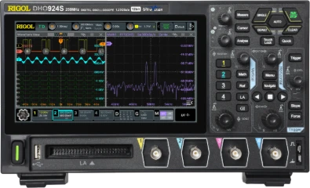

Hvorfor 120°?
Generatoren har tre spoler fordelt jævnt rundt i statoren. 360° delt med 3 giver 120°. L2 når derfor sin top 120° (6,67 ms) efter L1, og L3 når sin top 120° efter L2.
u1 = Û · sin(ωt)u2 = Û · sin(ωt − 120°)u3 = Û · sin(ωt − 240°)
230/400 V · 50 Hz · L1 L2 L3 N + PE (PEN)
Tre faser forskudt 120°. Sæt to punkter på kurvernes toppe og se, hvorfor spændingen mellem to faser er 400 V og ikke 460 V.

Klik på en top (○) for at sætte punkt A og B. Klik på et punkt igen for at fjerne det. Træk i kurverne eller brug ← → for at flytte tidsmarkøren, og mellemrum for at afspille.
Generatoren har tre spoler fordelt jævnt rundt i statoren. 360° delt med 3 giver 120°. L2 når derfor sin top 120° (6,67 ms) efter L1, og L3 når sin top 120° efter L2.
Når vi siger 230 V, mener vi effektivværdien (RMS). Det er den jævnspænding, der ville give samme varme i en modstand. Selve kurven svinger højere op og længere ned.
Spændingen mellem L1 og L2 er forskellen i samme øjeblik: u12 = u1 − u2. Toppene på L1 og L2 kommer ikke på samme tid, så man kan ikke bare lægge 230 V og 230 V sammen.
Med visere er U12 = U1 − U2. Viserne står 120° fra hinanden, så forskellen bliver 2 · U · sin 60° = √3 · U.
Strømmene fra de tre faser løber sammen i nul. I hvert øjeblik er iN = i1 + i2 + i3. Ved symmetrisk belastning ophæver de hinanden, og IN = 0.
Er kun én fase belastet, er IN lig med strømmen i den fase. To lige store strømme, der er 120° forskudt, giver IN = I og ikke 2 · I.
Sæt A på L1's positive top og B på L2's negative top. Hvor langt ligger de fra hinanden i tid, og hvad er den største spænding mellem L1 og L2?
60°, svarende til 3,33 ms. Den største værdi af u12 er 563 V (peak), og den kommer midt mellem de to toppe, ved 60°. RMS-værdien er 398 V ≈ 400 V.
Sæt A og B på de positive toppe af L1 og L2. Den lodrette afstand mellem dem er 0 V. Betyder det, at der er 0 V mellem L1 og L2?
Nej. Spændingen mellem faserne er stadig 400 V RMS. To toppunkter på forskellige tidspunkter siger intet om forskellen i samme øjeblik. Det gør kurven u12.
Afspil animationen og hold øje med u1 + u2 + u3 under kurverne. Hvad er summen?
Den er 0 V i hvert øjeblik. Derfor løber der ingen strøm i nullederen, når belastningen er symmetrisk.
Strøm: Belast L1 og L2 med 10 A hver, og lad L3 være ubelastet. Gæt strømmen i nullederen, før du ser efter.
IN = 10 A og ikke 20 A. De to strømme er 120° forskudt og ophæver delvist hinanden.
Strøm: Belast alle tre faser med 10 A, men giv L2 og L3 en faseforskydning på 60° (induktiv). Hvad sker der med IN?
Strømmene er lige store, men de står ikke længere 120° fra hinanden. De ophæver derfor ikke hinanden, og IN bliver 10 A.
Strøm: Prøv usymmetrisk belastning med 16 A, 10 A og 4 A. Hvor stor bliver IN? Hvad ville man få ved at lægge strømmene sammen som tal?
IN ≈ 10,4 A. Lagt sammen som tal ville det give 30 A, men strømmene skal lægges sammen som visere.
Model: u(t) = Û · sin(ωt + vinkel) ved f = 50 Hz i et ideelt, symmetrisk net. Viserne tegnes med længden Û, så deres lodrette projektion er øjebliksværdien. Positiv φ betyder, at strømmen er forsinket i forhold til spændingen (induktiv belastning).
Modellen regner nettet som et kredsløb ved 50 Hz og for hver harmonisk orden op til den 15. Brugsgenstande er faste impedanser ud fra mærkeeffekt og cos φ ved 230 V, og ikke-lineære apparater sender typiske harmoniske strømme ud. Tålegrænser, kabeldata og HPFI-tider er typiske værdier til undervisning, ikke data for bestemte produkter.